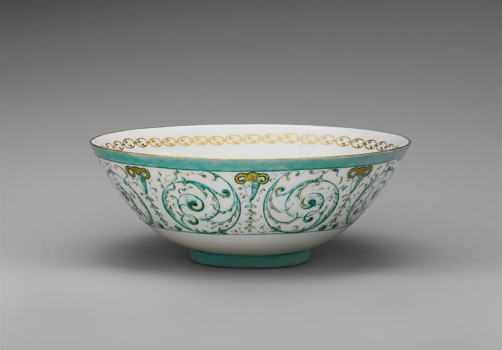
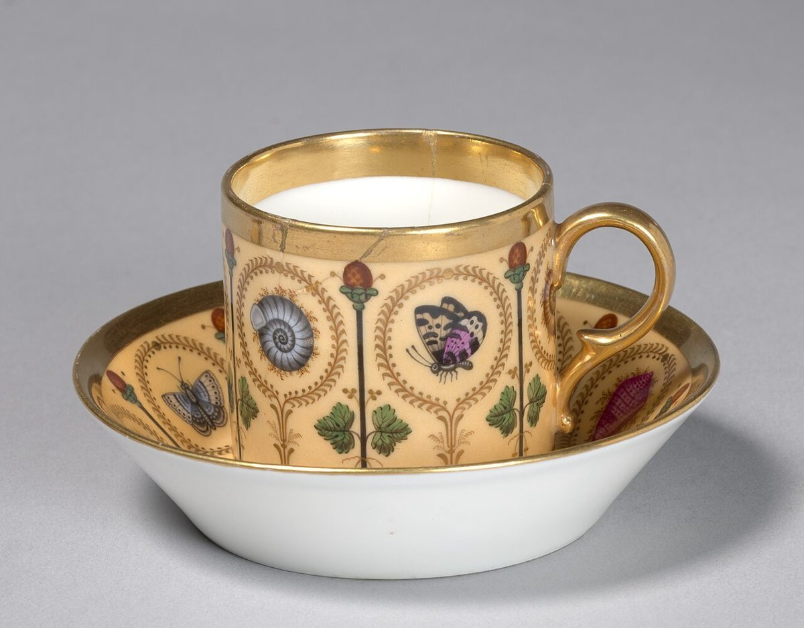
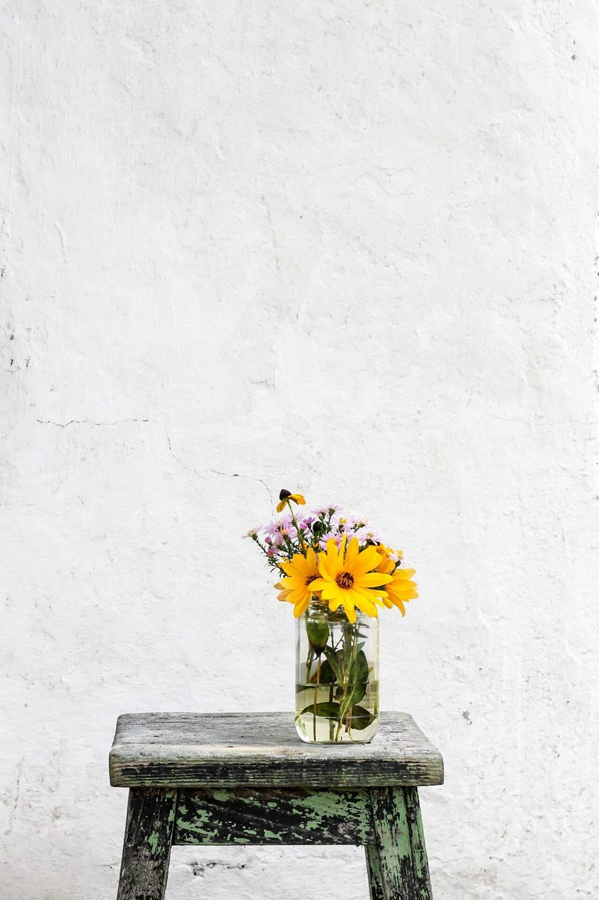
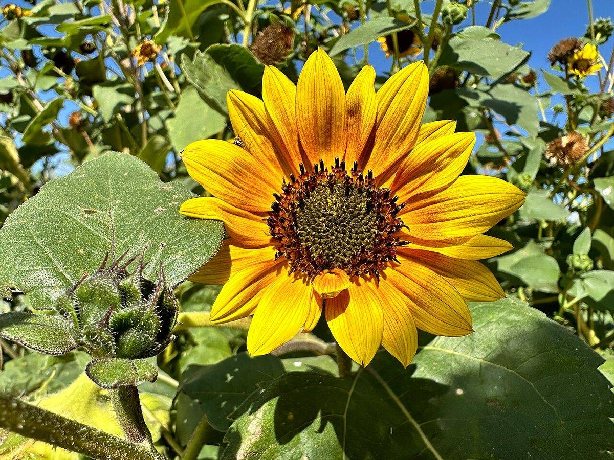
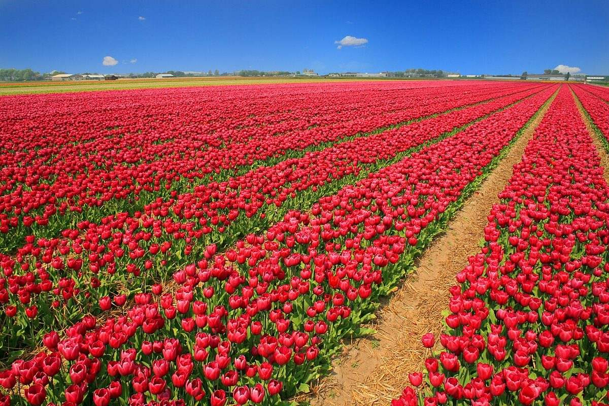

RECBATT 準備中
Scenery_gallery cafe
ビデオカメラの部位の配置図
00:00:00:006 PARTS
DIAGRAM
六つの部位と、ページの対応
ビデオカメラを横から見た配置図です。番号の部位が、サイトの各ページに対応しています。
このテーマは制作側の連想で、お店の理念・由来とは無関係です。



06 BATTERY
準備中の残量ゲージ
お店の案内は、いまのところ次の項目が準備中です。決まり次第、差し替えます。
- 営業時間準備中
- 定休日準備中
- メニュー準備中
- 価格準備中
- 予約準備中
確認できているのは、所在地とInstagramのみです。



| 屋号 | Scenery_ gallery cafe |
|---|---|
| 所在地 | 〒802-0983 福岡県北九州市小倉南区志徳２丁目５−１９ |
| 電話 | 準備中 |
| scenery_gallerycafe |